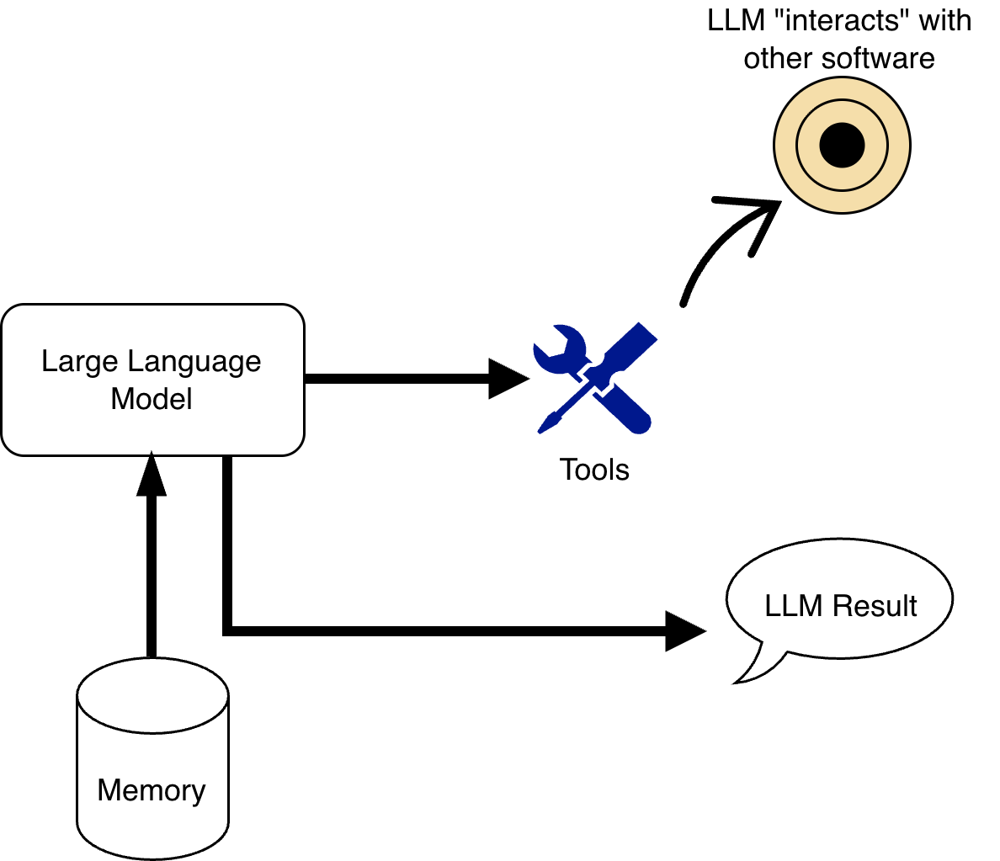

Welcome to our Training Materials!
This tutorial will go over all the essentials you'll need to get started with Claude Code. Specifically, we'll be working on building your own portfolio website. You should start here for a conceptual overview on AI Agents & Claude Code, then proceed to part 2.
What is an AI Agent?
By now, nearly all Computer Science students (including freshmen) are familiar with LLMs, or Large Language Models. As of recording writing this tutorial, there are 3 popular LLMs: ChatGPT by OpenAI, Claude by Anthropic, and Gemini by Google. These are effectively just gigantic machine learning models that can accept some natural language input, such as text, and generate a natural language output.
When these LLMs were first announced, all you could really do with them was have a conversation by typing into your keyboard and reading the output on your screen. However, if you've used any modern LLM recently, you might have noticed a few upgrades over the past couple of years:
- You can now input images into LLMs like Claude, the models can analyze the image, and give you responses based on the image.
- When you ask a question or want information, LLMs can perform a web search, just like you would perform a Google search.
- LLMs like ChatGPT can now even write Python code and run the Python code, providing you with the output.
Let's call the new capability of these LLMs tools. Now, we can split up the functionality of services like Claude into 2 parts:
- The LLM: this is responsible for all the reasoning and planning.
- Tools: This is like giving your LLM hands. It can now take actions and use its tool to "interact" with other software.
An AI Agent is a specific combination of LLM, tools, and memory.
What do we mean by memory?
Have you ever tried asking Claude too many questions, and suddenly it forgets about the first question you asked? This has to do with a concept called context. Think of context like the specific set of information the agent can reference at any given point you try to use it.
For agents, we typically break up context into the following:
- The goal: what are you trying to do with the agent?
- Instructions: how do you want the agent to accomplish your task?
- State: what has the agent already done? What does the agent need to accomplish next?
- Environment: what tools can the agent use right now? "Where" is the agent working?
Memory is effectively a storage unit that provides your agent with relevant context as it's performing a task. We break memory down into 2 types:
- Short-Term Memory: this is the amount of information that the LLM can process at once.
- Long-Term Memory: since an LLMs context cannot fit a ton of information, we store other relevant information for the agent in other files, and the agent pulls information from these files as necessary.
Taking this information together, you can see that AI Agents can be super customizable:
- You pick the model. Whether you want a super high-reasoning model, like Claude Opus 4.6 or a lightweight model that doesn't have as much reasoning capabilities, like ChatGPT 5 Instant.
- You decide what tools the agent has access to.
- You decide how to control the agent's memory.

This can all get pretty complicated pretty fast!
Claude Code
For this project, we will be using Claude Code. Rather than chatting with an LLM in your browser, you gain the ability to chat with an LLM directly in a coding workspace through your terminal. In our specific case, this gives Claude the ability to read code, refactor files, and run commands to help you code faster. By doing this, we gain an assistant directly embedded into the context of our project that can understand large codebases, generate and edit files directly, debug errors, and run tests for us. This eliminates the need to copy several things to a chat window in your browser and automates several steps of coding with LLMs. Not all steps are the same though; there are several differences between generating code through a chat window and through Claude Code that require specific steps to produce better outputs.
There are several agentic coding tools—like GitHub Copilot and Cursor, with the closest one being OpenAI's Codex—but we will be using Claude for this tutorial as it has an array of features that can enhance your productivity. While tools like Copilot are designed for inline code generation and assistance, Claude Code is able to handle much larger codebases and tasks. It should be noted however that the landscape of coding agents is changing frequently, and the next best tool could arise at any time.
You should also have some IDE, like VSCode, set up already in this section (although companies are beginning to make
IDE-free coding agents, we will still use an IDE to visualize code changes easier). You should also have Node setup
(npm/npx) as we will need it to install some packages. Furthermore, you should have a terminal application
to run Claude Code with, as it is a CLI-based application (the default terminal on your machine works fine).